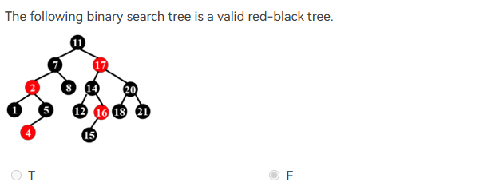
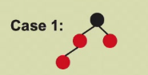
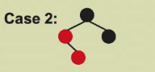
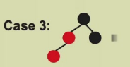
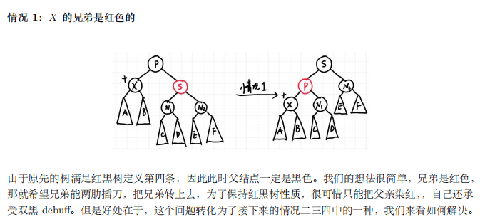
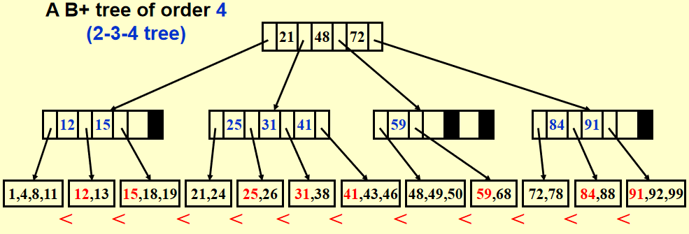

Lesson2：红黑树与B+树
红黑树
定义：
-
点不是红就是黑
-
根节点是黑色的
-
所有叶子节点(NIL)是黑色的，被称为哨兵。注意哨兵不是指常规看起来没有孩子的节点。
-
如果一个节点是红的，那么它两个孩子都是黑的
-
对于任意节点，任何从之到后代叶子节点的简单通路都有相同数量的黑色节点。注意是到叶子，因此看下面这题：

选择F，因为节点16的黑孩子只有一个，相当于还有另一个哨兵孩子，而黑高需要算到哨兵，因此16节点的黑高不符合总体。
注意：它本身是一棵二叉搜索树
黑高，即bh(x)，是从节点x到其后代叶子节点的简单通路上的黑色节点数，由于性质5，不同通路的bh总是相同的一个值。
定理：有N个内部节点的红黑树的黑高至多为\(2log(N+1)\)，使用数学归纳法。
树高最多为黑高 2 倍。
证明：在一棵红黑树中，从某结点 X 到其后代叶结点的所有简单路径中，最长的一条路径的长度至多是最短一条的 2 倍。
insert 插入
如果插入的节点是红色的，那么性质5不会被破坏。
性质1、3不可能被破坏，性质2可能(空树)，性质4也可能。
如果是空树插入红色节点，那直接染黑就行。

这个情况，如果爷爷不是根，就把爷爷染红，父亲与叔叔(同级相邻节点)染黑。
是根就把爷爷再染黑。

旋转最下面的节点，进入case3。

先把爷爷染红再说，然后把爸爸(此处指左边的父节点)染黑，这样保证了至少左边路径是安全的，然而右边路径相当于少了一个节点。
这样左边重右边轻，所以我们把左子树的根节点(即爸爸)进行旋转(拎起来)。
我们发现case2、3的时间复杂度都是O(1),而case1的时间复杂度则为\(O(logn)\)(写一下很好理解，因为如果爷爷不是根，那就是黑的，想不相当于别的当中忽然插入一个红色节点(笑)？需要迭代，最坏需要树高的时间复杂度)。
delete 删除
这一操作较为复杂，我们首先回顾一下普通平衡搜索树的删除操作，假设被删除的结点为 X： 1. 如果 X 没有孩子，直接删除就好，没有任何后顾之忧； 2. 如果 X 只有一个孩子，那就让孩子接替 X 的位置； 3. 如果 X 有两个孩子，那就让 X 与其左子树的最大结点（或右子树最小结点）交换，然后删除 X（这时 X 所在的位置一定只有一个子节点，因为左子树最大结点不可能有右孩子，右子树最小结点不可能有左孩子）。
事实上红黑树的删除是基于这些操作的，需要注意的是第三种情况，X 和与其交换的结点只交换键值，不交换颜色，否则如果两者颜色不同，在交换的时候就可能破坏第五条性质，这是很难令人满意的。
总而言之，第三种情况可以通过一步交换直接转化为第一或第二种情况，因此我们只需要关心第一和第二种情况。在第一种情况中，接替被删除结点所在位置的结点是 NIL，第二种则是被删除结点的子结点。如果被删除的结点是红色，事实上无事发生，没有任何性质被破坏；如果被删除的是黑色，如果接替上来的结点是红色的，直接染黑也不会破坏任何性质。接下来就是问题的关键，如果接替的是 NIL 或是黑色结点应该怎么办？

B+树
B+树的阶数为M时，其结构特性如下：
- 根节点要么是叶节点，要么有2到M个子节点。
- 所有非叶节点（除了根节点）都有⌈M/2⌉到M个子节点。
- 所有叶节点都处于相同的深度。
度为4的B+树也可以叫做2-3-4树(每个节点可能的子节点个数)。
示例：

我们可以从这一示例中看出B+树的一个特性：每个子节点的第一项总是与父节点对应序列的前一位(如果有的话)相同，这意味着其实叶子节点的全序列加起来是包含所有长辈的值的(啊？)。
Btree Insert ( ElementType X, Btree T )
{
Search from root to leaf for X and find the proper leaf node;
Insert X;
while ( this node has M+1 keys ) {
split it into 2 nodes with (M+1)/2 and (M+1)/2 keys, respectively;
if (this node is the root)
create a new root with two children;
check its parent;
}
}
我说实话insert的这一操作多上手几次就发现规律了，但是我讲还真讲不清楚。
嗷嗷，感谢wyy老师的讲义，我找到了一个可以准确表达的语言：
找到插入的位置，然后插入看结点是否放得下，放不下就分裂;
如果分裂后子结点个数也过多则继续向上一层分裂，直到根结点孩子爆满则将根结点分裂并生成新的根结点；
当然还要注意即使不分裂也可能需要按 B+ 树定义更新上层结点